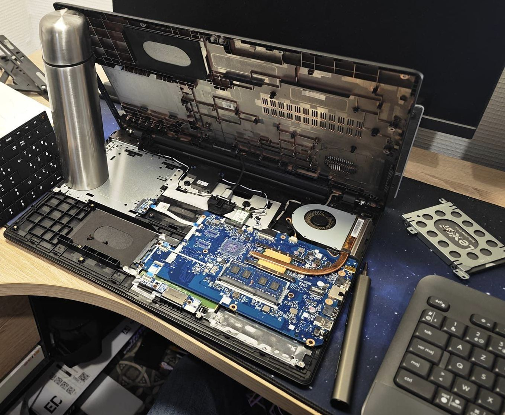
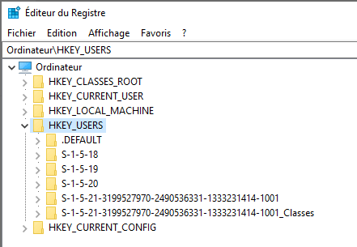

Déploiement de Salle Informatique
Mise en place d'un parc de 25 postes avec masterisation via Clonezilla (gain de temps de 70%).
InfrastructureTechnicien Support Informatique & Expert Hardware 🛠️
Bienvenue sur mon espace de documentation technique. Ce dépôt regroupe quelques-unes de mes réalisations de maintenance et mes méthodologies d'intervention.
Spécialisé dans le support matériel, j'évolue actuellement vers l'ingénierie hardware pour renforcer mon expertise technique.
Mise en place d'un parc de 25 postes avec masterisation via Clonezilla (gain de temps de 70%).
Infrastructure
Migration SSD, upgrade RAM et changement de pâte thermique pour prolonger la vie des machines de 5 ans.
Maintenance
Restauration de fluidité sur matériel ancien grâce à l'optimisation thermique et logicielle.
Open Source
Réparation de profils utilisateurs corrompus via l'éditeur de registre Windows (.bak).